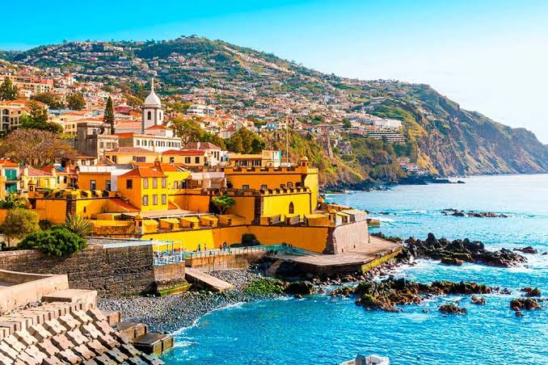

Destination Spotlight: Madeira
Madeira is a Portuguese archipelago in the Atlantic Ocean known for dramatic mountains, coastal landscapes, hiking trails, and a mild climate. It combines outdoor adventure with historic towns and local culture, making it an interesting destination for travelers who enjoy both nature and exploration.

Madeira at a Glance
- Country: Portugal
- Region: Atlantic Ocean
- Known for: mountains, hiking, coastline, and local cuisine
- Ideal for: nature seekers and adventure travelers
Highlights Through Time
- 15th century — Portuguese settlement of Madeira began.
- 19th century — Madeira developed a reputation as a European travel destination.
- 20th century — Tourism expanded as transportation and accommodation developed.
- 21st century — The islands became increasingly popular for nature and adventure tourism.
Why It Could Be Your Match
Madeira is especially suitable for travelers who value nature, outdoor activities, and scenic landscapes. Its combination of mountains and ocean creates an experience that feels adventurous without giving up comfort.
A Traveler's Perspective
Travel is about discovering places that change the way we see the world.
— WanderMatch
Experience Madeira
Want to learn more? Explore more information about Madeira
Estimated Daily Travel Budget
| Category | Budget | Mid-range | Premium |
|---|---|---|---|
| Accommodation | €35–60 | €70–120 | €150–250+ |
| Food | €20–30 | €35–55 | €70–100+ |
| Local Transport | €5–10 | €15–30 | €40–70+ |
| Activities | €10–20 | €25–50 | €60–120+ |
| Food & Entertainment | Costs vary depending on individual travel choices. | ||
| Estimates are intended for travel-planning purposes. | |||